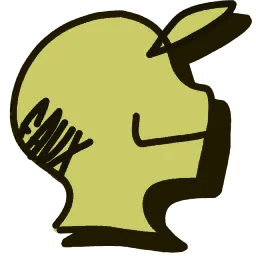

Combo is an elusive graffiti artist from the United States, known for his intricate, colorful pieces that blend street art with social commentary. Operating primarily in urban cities, his work often explores themes of identity, freedom, and resistance. With a unique style that incorporates bold lettering and abstract patterns, Combo's pieces challenge the status quo and question societal norms. Despite his underground fame, he remains largely anonymous, using the streets as his canvas and refusing commercial sponsorships. Combo has become a symbol of artistic rebellion, influencing a new generation of street artists.
Eric Haze is an influential American street artist and graphic designer, recognized for his contributions to the early graffiti scene in New York City. Known for his sleek, bold lettering and minimalist style, Haze has worked across various mediums, including mural painting, clothing design, and album artwork. His iconic logo designs, particularly for hip-hop artists and brands, helped shape the visual language of street culture. Haze’s work bridges graffiti, fine art, and commercial design, establishing him as a key figure in the evolution of contemporary urban art.
Beat is a graffiti artist from Japan, known for blending traditional Japanese art with modern street culture. His work often incorporates bold, dynamic characters inspired by ukiyo-e prints, combined with vibrant, stylized lettering and abstract shapes. Beat's pieces reflect a fusion of his cultural heritage and the global influence of urban art, creating a unique visual language that speaks to both his roots and contemporary street culture. Operating primarily in the underground scene of Tokyo, he’s gained recognition for his large-scale murals and thought-provoking social commentary. With a focus on movement, rhythm, and color, Beat’s art captures the energy of city life while paying homage to Japan’s rich artistic traditions.

Faux is a graffiti artist from the Netherlands, known for his innovative use of mixed media and optical illusions. His work blends sharp, geometric shapes with organic, flowing elements, often creating mind-bending pieces that play with perspective and depth. Faux is recognized for his mastery of stencils and spray paint, using these techniques to craft intricate, hyper-realistic images that seem to pop off the walls. His art reflects themes of digital culture, identity, and the intersection of technology and nature. Operating in both urban spaces and gallery settings, Faux’s work challenges perceptions and sparks conversations about the rapidly changing world around him.
Red is a graffiti artist from the Netherlands, renowned for his striking use of color and raw, emotive style. Known for his signature bold red tones, he often creates powerful, abstract figures that blend elements of surrealism and expressionism. Red's work typically explores themes of inner conflict, human emotion, and the complexities of modern life. His art is characterized by energetic brushstrokes and a sense of urgency, often conveying a visceral, almost chaotic feeling. While his pieces are frequently found in the streets of Amsterdam, Red has also showcased his work in galleries, where his pieces resonate with audiences for their depth and intensity.